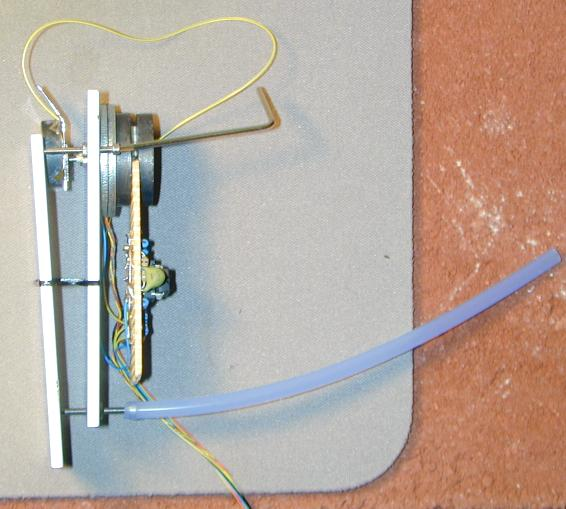

I have
not described much about this additional equipment two signal generators
and an oscilloscope. The signal generators provide the X and Y scan voltages
to both the microscope scanner and the oscilloscope. The Z (intensity)
input on this old scope is on the back.
I used this lamp with a magnifying
glass to help me see when the tip is close to the surface. I turn off the
lamp after I do the coarse adjustment. This version of the vibration isolation
is two concrete Patio squares on top of dense foam.

I use
an allen key to adjust the coarse positioning screws. I have placed a piece
of silicone rubber tubing over the fine adjustment screw this helps decouple
vibrations from my hand from the microscope. This seems to work fairly
well.


 //-->
//-->